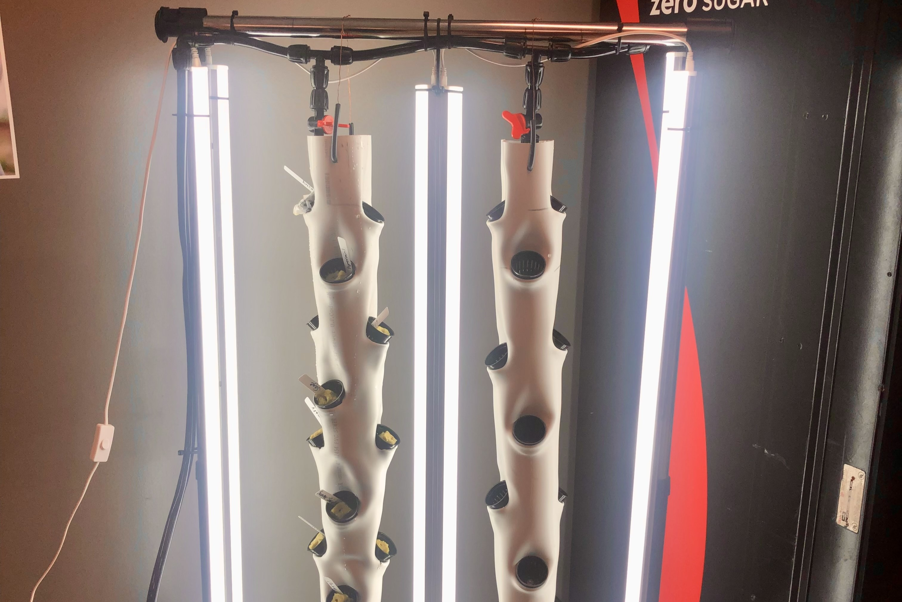

Portable Hydroponics
System
 As part of the Architecture, Construction, and Engineering (ACE) Mentorship Program, we were tasked with designing around the idea of growth.
The ACE Program introduces students to the role of architects, real construction sites, and different types of engineering.
We took this challenge literally, creating a unique and mobile way to grow food.
What is Hydroponics?
 Hydroponics is the process of growing plants without using soil.
Hydroponics is the process of growing plants without using soil.
Our version is a vertical system that utilizes water to transfer vital nutrition.
It is more space efficient than traditional farming.
Engineering Design Process
 We cut slits into PVC pipes and then heated the plastic using a heat gun.
We cut slits into PVC pipes and then heated the plastic using a heat gun.
Then we took a smaller wedged piece of PVC pipe and inserted it into the slit.
The pliable plastic would form an angled hole perfect for growing plants.
ACE Presentation

We had an outstanding presentation with one of the only physical models.